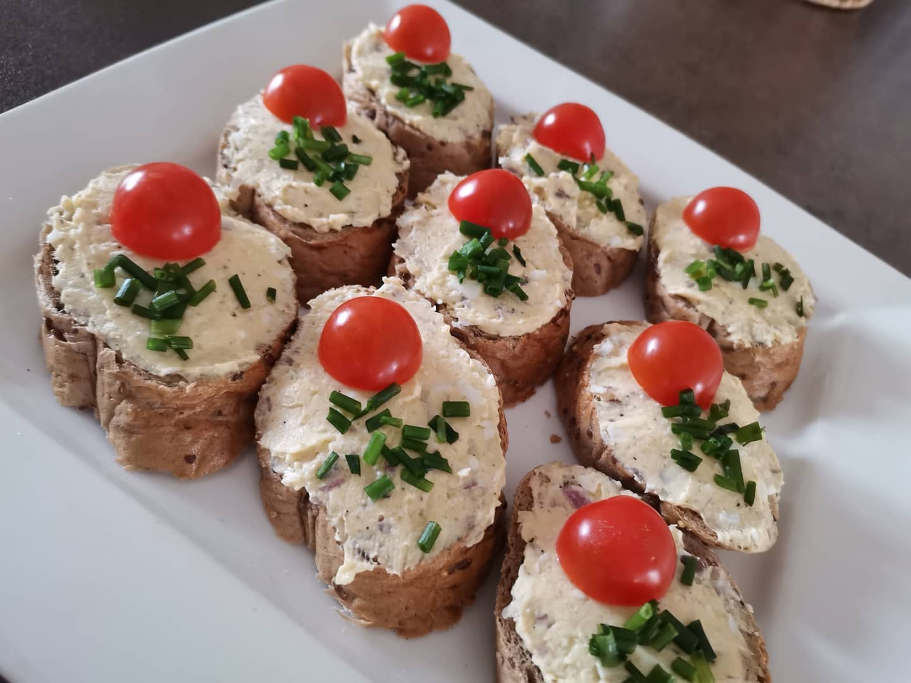

Vajíčková nátierka podľa @veron_v_kuchyni — Normy Jedál
Vajíčková nátierka 😋
#natierka #domacanatierka
#vajickovanatierka #vajicka #domace #zelenina #pazitka #paradajky #dnesjem
#homemadefood #vegetables
#yummy #egg #egg #chive
#eggspread #❤️ #😋